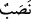
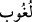

zorunluluk yoktur.
Bunun izahı şudur: Cennete girmek Allah Teâlâ’nın lütuf, ihsan ve rahmetiyledir.
Cennette derecelerin taksim edilmesi ise amellere ve sevaplara göredir. İşte bir köle
kendisi gibi âciz bir yaratık olan efendisinin boyunduruğunda efendisine yapmış olduğu
hizmet karşılığında bir bedeli hak etmiyorsa mutlak mülk sahibi olan için ne denilir ki!
Kul, hiç Allah’a yapmış olduğu ibadet karşılığında bir bedele hak kazanabilir mi?
Mutezile’nin “Allah kulların yararına olan şeyleri yapmaya mecburdur,” gibi
sözlerinden Allah çok yüce ve münezzehtir.
et-Te’vîlâtü’n-Necmiyye’de der ki: Allah Teâlâ “O (Rab) ki lütfuyla bizi asıl
oturulacak yurda (cennete) yerleştirdi. Artık orada bize ne bir yorgunluk dokunacak
ne de orada bize bir usanç gelecektir” âyeti ile bütün hallerden perdeyi kaldırdı. Artık
zâlim, muktesıd ve sâbıktan her biri kendi cehd, gayret ve ameliyle değil; Allah’ın
kerem, lütuf ve ihsanıyla onları konaklatacağı makama dâhil oldular. Yine amelinin
karşılığı olarak onu cennete girdiren de Allah’tır. Allah Teâlâ’nın kişiyi sâlih amellere
muvaffak kılması da O’nun lüfuf ve keremiyledir.
İşte Peygamberimiz (s.a.)’in “Kabul edilen illet ve gerekçe olmaksızın kabul edildi,
reddedilen de illet ve gerekçe olmaksızın reddedildi”[87] sözünün mânâsı budur.
“Artık orada bize ne bir yorgunluk” rahatsızlık ve ağrı “dokunacak ne de orada bize
bir usanç” ve rehâvet “gelecektir.” Çünkü orada teklif, zorluk, üzüntü, külfet ve sıkıntı
yoktur; hep eğlence, huzur, rahatlık ve mutluluk vardır.
Cennet ehli Allah Teâlâ’nın cemâlini görmek istedikleri zaman belli bir mesafeyi
katetmeye ve belli bir vakti beklemeye muhtaç olmazlar. Bilakis onlar cenneteki
köşklerinde iken “İşte onlara, sabretmelerine karşılık cennetin en yüksek makamı
verilecek, orada hürmet ve selamla karşılanacaklardır.” (el-Furkân 25/75)
Mevlâ’nın cemâlini gördükleri zaman gözlerini her hangi bir tarafa çevirmelerine hâcet
yoktur. Keyfiyetsiz olarak oldukları gibi Mevlâ’yı görürler. Her zaman ve durum O’nun
cemâlini görmelerine müsâiddir.
Allah Teâlâ şöyle buyuruyor: “Orada canlarının istediği, gözlerinin hoşlandığı her
şey vardır.” (ez-Zuhruf 43/71) “ ile “ kelimeleri arasındaki fark şudur:
Birincisi, bizzat meşakkat, külfet ve zorluğun kendisidir. İkincisi ise meşakkat ve
külfetten organlara hâsıl olan gevşeklik, kırgınlık, zâfiyet ve yorgunluktur. Ebû Hayyan:
“, beden yorgunluğundan meydana gelir, demiştir. Hayatıma yemin olsun ki cennet
şu söze pek layıktır:
O kadar yücedir ki onun sahasına hüzün ve keder inemez.
Ona taş bile dokunsa huzurlu ve mutlu olur.
Beden yorgunluğu, ağrı, acı, zahmet, meşakkat ve külfet olmayınca tabiî ki usanç
bıkkınlık ve kırgınlık benzeri şeyler olmayacaktır. Buna rağmen menfi fiili tekrar ederek